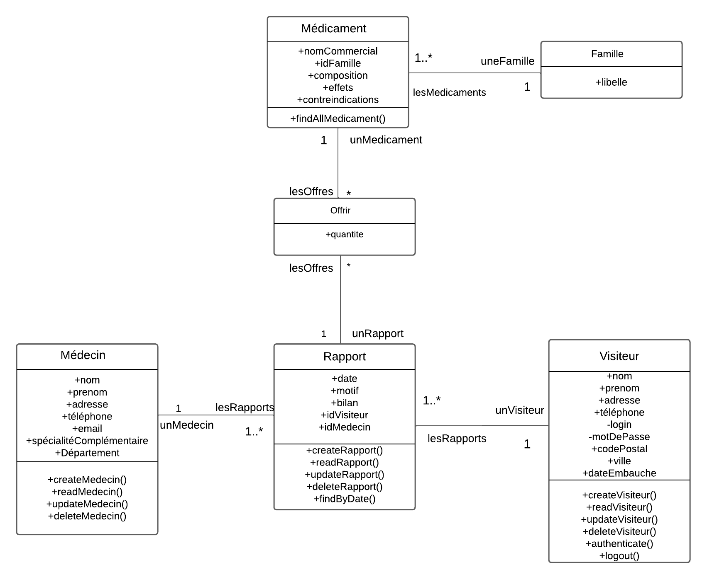
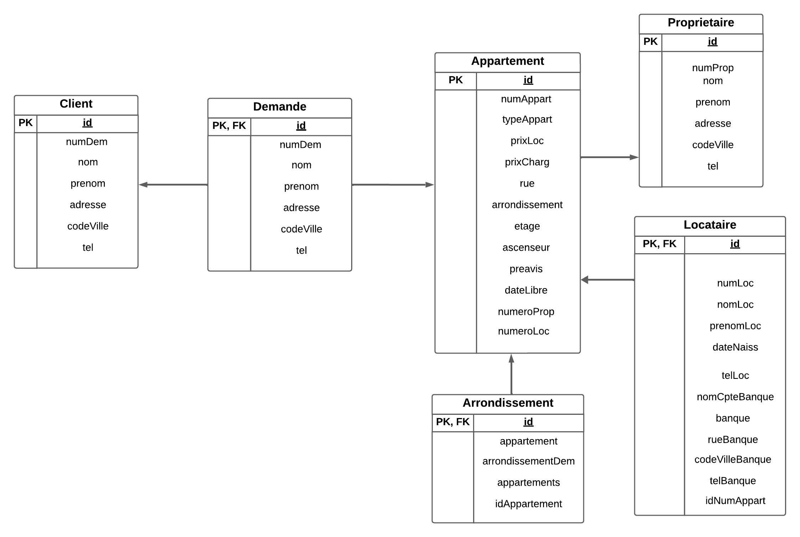
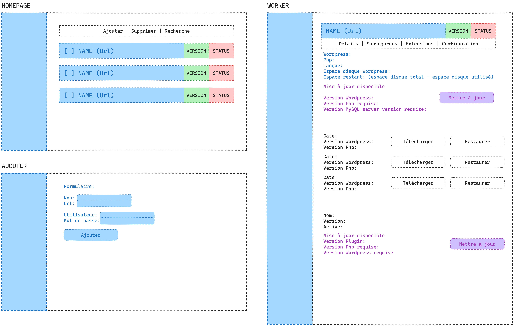
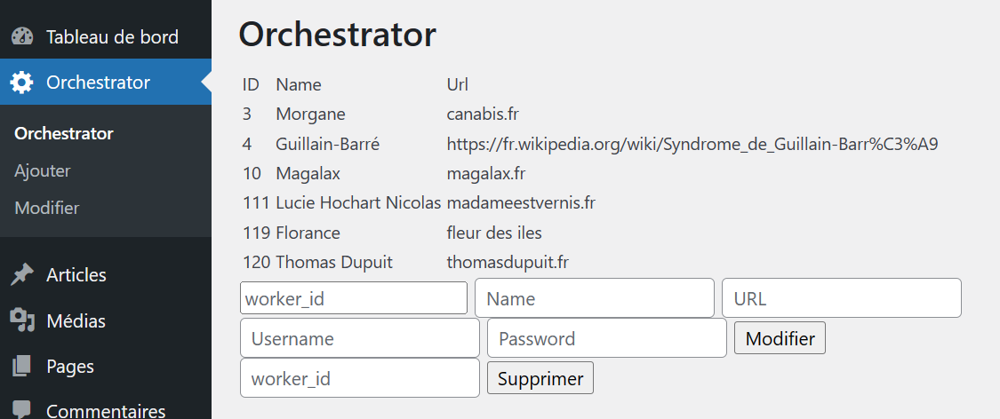

BTS SIO (Services Informatiques aux Organisations)
Option SLAM
ENSITECH Montigny-le-Bx(78180) - 2023/2024
CNED - 2022/2023


Actuellement en 2ème année de BTS Services Informatiques aux Organisations (SIO) - option SLAM (Conception et Développement de solutions applicatives) dans l'école ENSITECH à Montigny-le-Bretonneux.
Je suis une étudiante en reconversion professionnelle. Après l'obtention de ma Licence de Biologie et des différents stages effectués, je me suis aperçue que le domaine de la Biologie n'était pas fait pour moi. J'ai donc choisi de me réorienter dans un domaine qui me passionne vraiment : l'informatique.
La programmation a toujours été un sujet qui m'intéressait. Dès 2016, j'ai commencé des formations gratuites sur le "Site du Zéro" renommé "OpenClassRoom" à présent. J'ai pu découvrir ainsi l'immensité qu'est l'informatique et plus précisément la programmation.
En Terminale Scientifique, j'ai dû choisir une option pour le Baccalauréat et j'ai choisi ISN (Informatique et Science du Numérique). À travers cette matière, j'ai pu appréhender les bases algorithmiques, le langage C++, un peu de HTML et développer lors d'un projet de groupe un petit jeu vidéo 2D de plateforme en C++.
Le BTS SIO étant général, il me permet d'appréhender les différents domaines et d'apprendre de nombreuses compétences.
Mon parcours académique m'a permis d'acquérir des compétences variées dans le domaine de l'informatique et du développement, ainsi qu'une solide base en sciences grâce à ma Licence de Biologie.
Option SLAM
ENSITECH Montigny-le-Bx(78180) - 2023/2024
CNED - 2022/2023
URF des Sciences de Versailles Versailles (78000)
Juin 2021
Lycée Saint-François d'Assise Montigny-le-Bretonneux (78180)
Juillet 2017
Je suis actuellement en BTS Services Informatiques aux Organisations (SIO), spécialité Solutions Logicielles et Applications Métiers (SLAM), un cursus de deux ans qui me prépare à devenir technicienne en développement logiciel.
Pendant ma formation, j'ai acquis des compétences en programmation (PHP, Java, C#), en utilisation de frameworks et de CMS (WordPress), ainsi qu'en développement d'applications web et mobiles.
J'ai appris à analyser les besoins des utilisateurs, concevoir des solutions adaptées, gérer des projets informatiques, et assurer la maintenance et la sécurité des systèmes informatiques. Grâce à mon alternance, j'ai pu mettre en pratique ces apprentissages dans un contexte professionnel ActivBrowers, renforçant ainsi mes compétences et ma capacité à travailler efficacement en équipe.
Expériences Professionnel
Compétences
Tableau de synthèse


Stage - Informa'Lys
Diagnostic et dépannage informatique
Juillet 2022

Stage - Groupe Rocher
R&D: Formulation cosmétique des animations de noël 2022
Juin/Juillet 2021

Intérim - Intermarché
Hôtesse de caisse

CDI - U Express
Hôtesse de caisse

CDI - Leclerc
Mise en rayon
CDI - McDonald's
Equipière polyvalente
Author: Marie NICOLAS / Romain BOURDON
Lien GitHub du code source
Le projet de Gestion des Médecins et Visiteurs est une application web développée en PHP, conçue pour faciliter la
gestion et l'interaction entre les professionnels de santé (médecins) et les visiteurs (généralement des représentants
commerciaux).
L'application offre une interface intuitive permettant aux utilisateurs de s'inscrire, de rechercher des
médecins, de consulter et de modifier des informations, et de gérer des rapports de visite.
Cas 1: Gérer les rapports de visites
Cas 2 : Gérer les médecins
Diagramme de classe
Schéma relationnel de données
Ressources fournies : Document Word :
Résultat attendu : Le projet vise à développer une nouvelle application pour le laboratoire Galaxy Swiss Bourdin (GSB), afin de gérer la location d'appartements pour ses visiteurs médicaux. L'application remplacera un système obsolète basé sur Access, avec pour objectifs une meilleure fonctionnalité, une interface utilisateur moderne et une gestion multi-utilisateurs.
Accès aux codes et à la documentation :
Le projet vise à développer une nouvelle application pour le laboratoire Galaxy Swiss Bourdin (GSB), afin de gérer la location d'appartements pour ses visiteurs médicaux. L'application remplacera un système obsolète basé sur Access, avec pour objectifs une meilleure fonctionnalité, une interface utilisateur moderne et une gestion multi-utilisateurs.
MVC, POO, CRUD
ActivBrowsers, une filiale d’AxivIT, est une agence spécialisée dans la transformation digitale et les solutions IT. Elle accompagne les entreprises dans le développement de sites web, d’applications mobiles, et dans l’optimisation de leur présence digitale. Forts d’une expertise en technologies telles que Drupal, WordPress, Magento, Prestashop, Vue.js, et Node.js, les consultants d’ActivBrowsers apportent un soutien technique complet et personnalisé pour assurer le succès des projets clients.
Dans le cadre du pôle TMA (Tierce Maintenance Applicative), ActivBrowsers se distingue par sa capacité à gérer et maintenir des applications complexes, en offrant des services de support et d’amélioration continue. Le pôle TMA veille à la pérennité et à l'évolution des systèmes d'information, assurant une performance optimale et une adaptation constante aux besoins changeants des entreprises.
Au cours de mon alternance, j'ai travaillé en peer-programming au développement d'un plugin Wordpress.
Celui-ci permet d'effectuer l'évolution et la migration de la base de données Wordpress.
Il permet une montée de version du site et des modules.
J'ai eu une roadmap m'indicant les différentes étapes du projet dès le début ainsi que les deadlines.
Maquette du frontend souhaité

Premier essaye des fonctionnalités
Easy Réunion et Vatel Event sont des entreprises spécialisées dans la gestion d'événements et la location de salles pour des réunions et des séminaires. Le pôle informatique joue un rôle crucial en assurant le développement et la maintenance des plateformes web, facilitant ainsi la gestion des réservations et des événements.
J'ai fait un stage de deux mois Juin/Juillet 2023 chez Easy Réunion. L'objectif principal est contribuer au développement web de l'entreprise, en se concentrant sur l'amélioration des performances du site et de son référencement (SEO).
En tant qu'étudiant en BTS SIO option SLAM, je m'oriente vers le développement fullstack, une spécialisation qui requiert une connaissance approfondie des technologies front-end et back-end.
Dans cette optique, il est crucial de réaliser une veille technologique régulière pour rester à jour avec les évolutions rapides et constantes dans le domaine du développement web.
Cette veille technologique couvre les principales tendances et innovations dans le développement web et l'analyse de données avec Python, incluant les frameworks, langages, outils de gestion et de déploiement, ainsi que les récentes régulations en matière de protection des données.
En suivant cette veille, je m'assure de développer des compétences à la pointe de la technologie, indispensables pour réussir dans le domaine du développement fullstack.
PHP 8.3 introduit plusieurs nouvelles fonctionnalités et améliorations, renforçant à la fois la performance et la sécurité des applications web. Parmi les nouveautés les plus notables, on retrouve les constantes de classe typées et les exceptions DateTime granulaires. Ces ajouts permettent aux développeurs de bénéficier d'un code plus robuste et plus sûr, en facilitant la gestion des erreurs et en améliorant la lisibilité et la maintenabilité du code.
Les constantes de classe typées offrent une meilleure vérification des types, réduisant ainsi les erreurs de type et améliorant la fiabilité du code. Les exceptions DateTime granulaires permettent une gestion plus fine des erreurs liées aux dates et heures, offrant ainsi une meilleure précision et un contrôle accru sur les opérations temporelles.
En plus de ces fonctionnalités, PHP 8.3 inclut des améliorations de performance qui optimisent l'exécution des scripts PHP, rendant les applications plus rapides et plus réactives. Ces améliorations sont essentielles pour les développeurs cherchant à construire des applications web modernes, performantes et sécurisées.
Résumé :
L'IA continue de transformer le développement web avec l'essor des chatbots intelligents qui utilisent le traitement du langage naturel et l'apprentissage automatique pour offrir une interaction utilisateur avancée et un support client continu. Des outils comme ChatGPT ont montré leur efficacité, permettant des réponses personnalisées et instantanées aux utilisateurs.
Impact :
Service Client 24/7 : Les entreprises peuvent offrir un support client continu sans augmenter les coûts opérationnels (CareerFoundry).
Amélioration de l'Expérience Utilisateur : Les chatbots permettent des interactions plus naturelles et fluides, augmentant la satisfaction et la fidélisation des clients (Software Development Company).
Résumé :
La sécurité des sites web est devenue cruciale face à l'augmentation des cyberattaques. L'implémentation de certificats SSL est devenue standard, et la conformité aux réglementations sur la protection des données comme le RGPD et le CCPA est essentielle pour éviter des sanctions et protéger les données des utilisateurs.
Impact :
Confiance des Utilisateurs : Les sites sécurisés sont mieux perçus par les utilisateurs, ce qui peut augmenter les taux de conversion (LambdaTest).
Réduction des Risques Légaux : Le respect des normes de conformité protège les entreprises contre les amendes et les poursuites judiciaires (Webskitters).
Résumé :
Les Progressive Web Apps (PWA) et les Accelerated Mobile Pages (AMP) sont des technologies clés pour améliorer les performances des sites web. Les PWA offrent des expériences utilisateur rapides et réactives même en mode hors ligne, tandis que les AMP optimisent les pages pour un chargement ultra-rapide. L'accessibilité web, guidée par les WCAG, est essentielle pour rendre les sites accessibles à tous les utilisateurs.
Impact :
Expérience Utilisateur : Les PWA et AMP augmentent la vitesse de chargement et la réactivité des sites, réduisant le taux de rebond et augmentant l'engagement des utilisateurs (Webskitters, Software Development Company).
Inclusivité : Les pratiques d'accessibilité web permettent à un public plus large d'accéder aux contenus, augmentant ainsi l'audience potentielle (Software Development Company).
Résumé :
La personnalisation du contenu grâce à l'IA permet de créer des expériences utilisateur plus pertinentes. Les algorithmes analysent les comportements des utilisateurs pour adapter le contenu en temps réel, augmentant ainsi l'engagement et la fidélité.
Impact :
Augmentation de l'Engagement : Un contenu personnalisé retient mieux l'attention des utilisateurs, ce qui peut mener à une augmentation des conversions et de la satisfaction client (Software Development Company).
Optimisation des Campagnes Marketing : La personnalisation permet des campagnes marketing plus ciblées et efficaces, améliorant le retour sur investissement (Software Development Company).
Résumé :
Les architectures composables et les frameworks modernes comme Jamstack continuent de croître, offrant plus de flexibilité et de performance. Les outils low-code et no-code permettent aux entreprises de développer des solutions web rapidement sans nécessiter de compétences techniques approfondies.
Impact :
Flexibilité et Scalabilité : Les architectures composables permettent de déployer des solutions plus rapidement et de les adapter facilement aux besoins changeants des entreprises (Netlify).
Accessibilité du Développement : Les outils low-code/no-code démocratisent le développement web, permettant à un plus grand nombre de personnes de créer des applications et des sites web (CareerFoundry).
11 février 2024
Lien article
Le rôle de Full Stack Data Scienst consist en un spécialiste polyvalent possédant une gamme étendue de compétences (l'ingénierie des données, l'analyse de données et l'apprentissage automatique).
Les métiers de la Data Science requièrent une pluralité de compétence et de savoir-faire. Du nettoyage des données à l'élaboration de modèles prédictifs, en passant par l'analyse exploratoire, la représentation visuelle et la narration de données, les missions confiées à un Data Scientist sont multiples et complexes. Certains postes exigent une expertise pointue tandis que d'autres misent davantage sur une vision globale de bout en bout. A travers le concept de "Full Stack Data Scientist", Kelvin Lu explore les contours de cette discipline où le langage Python occupe une position centrale.
Selon Kelvin Lu, un Full Stack Data Scientist doit maitriser les aspects fondamentaux de la Data Science et disposer de bonnes bases en matière d'infrastructure IT. Autrement dit, il faut pouvoir manipuler les pipelines de connées, concevoir des modèles pertinents, veiller à leur maintenance, garantir leur fiabilité et faciliter leur déploiement en production. Combinées à une culture agile et DevOps, ces aptitudes permettent aux Full Stack Data Scientist de piloter des projets ambitieux en toute autonomie.
La formation classique d'un Data Scientist porte généralement sur l'algorithmique, les probabilités, les statistiques et les mathématiques appliquées. Ils doivent élargir leur champ de compétences en abordant des thématiques propres au génie logiciel, telles que l'automatisation des tests, l'intégration continue, les mécanismes de contrôle de versions, etc. Python propose des modules tels que Git, Jenkins, TravisCI, Ansible et SaltStack pour couvrir ces sujets cruciaux.
Top 26 Python Libraries for Data Science in 2024 Datacamp
1Janvier 2024
Actuellement, la science des données est devenue un domaine essentiel dans notre société et Python s'impose rapidement comme le langage de prédilection des scientifiques des données.
Grâce à sa simplicité et sa flexibilité, Python propose un ensemble impressionnant de bibliothèques et de cadres de travail facilitant la réalisation de projets sophistiqués de sciences des données. Dans cet article, nous examinerons les principales bibliothèques Python pour les sciences des données et discuterons de leurs caractéristiques et avantages. Les sept principales bibliothèques Python pour les sciences des données : NumPy - Utilitaire de calcul numérique pour Python, offrant des opérations rapides et efficaces sur les tableaux, l'algèbre linéaire, la transformation de Fourier, la génération de nombres aléatoires et plus encore. Pandas - Bibliothèque de manipulation et d'analyse de données, offrant des structures de données telles que Series et DataFrame, semblables aux tableaux Excel. Idéal pour lire, écrire, filtrer, trier, regrouper, pivoter, fusionner, résumer, et agréger les données. Matplotlib - Librairie de visualisation pour Python, offrant une interface simple pour créer des graphiques statiques, animés, interactifs et 3D. Prend en charge divers types de diagrammes, dont les diagrammes linéaires, dispersés, empilés, circulaires, thermiques et en nuage de points. Seaborn - Basé sur Matplotlib, Seaborn offre une interface de haut niveau pour créer des graphiques statistiques. Propose des thèmes et des schémas de couleurs prédéfinis, ainsi que des fonctions pour créer des distributions, des diagrammes ventilés, des boîtes à moustaches, des matrices de points et plus encore. Scikit-learn - Bibliothèque de machine learning pour Python, offrant des algorithmes de classement, de régression, de regroupement, de réduction de dimensionnalité, de sélection de fonctionnalités et d'évaluation de modèles. Inclut des algorithmes pour l'apprentissage supervisé et non supervisé, ainsi que des outils pour la validation croisée, le réglage des paramètres et la construction de flux de travail. TensorFlow - Plateforme open-source pour l'apprentissage automatique et le deep learning sous Python. Offre une infrastructure flexible et évolutive pour construire des réseaux neuronaux, CNN, RNN, GAN et plus encore. Prise en charge des calculs CPU et GPU, idéal pour les projets de machine learning à grande échelle. Keras - Interface de haut niveau pour les réseaux neuronaux écrits en Python et exécutables sur TensorFlow, Theano ou CNTK. Fournit une interface conviviale pour la définition, l'entraînement, l'évaluation et la visualisation des réseaux neuronaux. Prend en charge diverses fonctions d'activation, fonctions de perte, algorithmes d'optimisation et techniques de régularisation. Python propose un ensemble riche de bibliothèques et de cadres de travail pour les sciences des données, chacun présentant des fonctionnalités et avantages uniques. Que vous soyez débutant ou expert, il existe une bibliothèque ou un cadre Python adapté à vos besoins en sciences des données. Maîtriser ces bibliothèques vous permettra de devenir compétent en sciences des données et de construire des projets sophistiqués de sciences des données. La force de Python réside dans son écosystème complet de bibliothèques axées sur les tâches de sciences des données. En utilisant ces outils, vous pourrez rationaliser vos flux de travail d'analyse de données et produire des informations exploitables de manière efficace. Apprendre les sciences des données avec Python devient plus accessible grâce à sa syntaxe conviviale, ses vastes bibliothèques et sa communauté dynamique. Python offre un socle solide pour les scientifiques des données de tous niveaux, leur permettant d'acquérir des compétences et des connaissances pour répondre aux besoins changeants du marché des données.
28/08/2023
Lien articleDes scientifiques en informatique de l'Université du Massachusetts Amherst, dirigés par Emery Berger, ont développé Scalene, un Python profiler primé. Python, populaire dans le domaine de la science des données et de l'apprentissage automatique, se distingue par sa facilité d'utilisation et sa syntaxe intuitive. Cependant, cette facilité se paie par un efficacité moindre comparée à d'autres langages comme C++, Fortran ou Java. Les profiler sont des outils utilisés pour combattre l'inefficacité de Python, en identifiant les parties lentes du code. Scalene, unique en son genre, utilise l'intelligence artificielle pour suggérer des améliorations spécifiques du code. Il se concentre sur les aspects clés tels que l'utilisation du CPU, du GPU et de la mémoire. Scalene offre un "tableau de bord" permettant non seulement de mesurer la vitesse du programme, mais aussi de fournir des conseils pour améliorer sa performance. Selon Berger, l'avenir des améliorations de vitesse informatique réside davantage dans la programmation efficace que dans le matériel. Depuis sa publication sur GitHub, Scalene a été téléchargé plus de 750 000 fois et a été récompensé lors de la conférence USENIX sur la conception et l'implémentation de systèmes d'exploitation. Scalene a le potentiel non seulement d'améliorer la performance des programmes Python, mais aussi d'influencer positivement la manière dont les développeurs interagissent avec le langage, tout en contribuant à l'évolution globale des pratiques de programmation.
{kind=link}